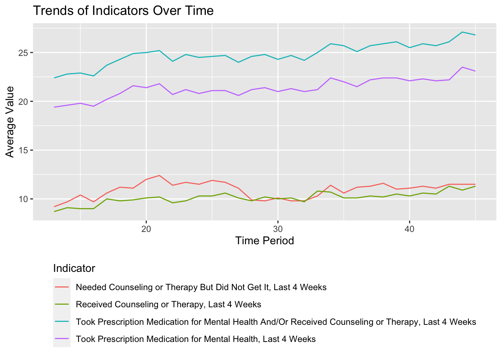

Attaching package: 'dplyr'The following objects are masked from 'package:stats':
filter, lagThe following objects are masked from 'package:base':
intersect, setdiff, setequal, unionThe dataset “Mental Health Care in the Last 4 Weeks” is available on Data.gov and provides valuable insights into the impact of COVID-19 on mental health. This initiative is part of a collaboration between the National Center for Health Statistics (NCHS) and the Census Bureau, using an experimental data system known as the Household Pulse Survey. Here’s a comprehensive overview incorporating the details of the dataset’s development and its findings:
Background of the Data:
The “Mental Health Care in the Last 4 Weeks” dataset provides crucial insights into how COVID-19 has impacted American households socially and economically. Developed by the NCHS in collaboration with the Census Bureau, it initially formed part of the Household Pulse Survey which began on April 23, 2020. The survey aimed to quickly monitor recent changes in various aspects of daily life, including mental health due to the pandemic.
This dataset specifically tracks changes in mental health care by showing the percentage of adults aged 18 and over who, in the past four weeks, have taken prescription medication for mental health, received counseling or therapy from a mental health professional, or had an unmet need for mental health services because they did not receive the counseling or therapy they needed.
How to Find the Data:
Source and Attribution:
Purpose and Context:
This dataset provides timely information on the use of mental health services during a critical period. It supports a variety of research objectives, such as comparing current mental health statistics with previous years’ benchmarks, understanding ongoing trends, and planning resource allocation for mental health services. Historical data from the National Health Interview Survey (NHIS) of 2019 offers a useful comparison, highlighting trends over a longer period and under different circumstances.
Data Equity:
Ensuring equity in data analysis is vital, especially to address the diverse impacts of COVID-19 on different demographic groups. The dataset includes detailed breakdowns by age, ethnicity, and other factors to help identify and address disparities in mental health care access and utilization during the pandemic.
This comprehensive approach in data gathering and analysis is aimed at providing insights that can help guide public health strategies and interventions to better manage the nation’s mental health in the wake of the pandemic.
The dataset “U.S. Unemployment Rate Over the Last Four Years” provides a detailed view of the unemployment trends and changes in the American labor market. It reflects the economic challenges and recoveries during this period, particularly influenced by events such as the COVID-19 pandemic.
Background of the Data:
This dataset is collected by the Bureau of Labor Statistics (BLS), which conducts monthly surveys to gauge the unemployment rate across different demographics and sectors. The unemployment rate is a key indicator of economic health, showing the percentage of the labor force that is jobless but actively seeking employment.
Recent Trends:
How to Find the Data:
Source and Attribution:
Purpose and Context:
The primary purpose of collecting unemployment data is to provide a clear picture of the labor market’s health and help policymakers, researchers, and the public understand current economic conditions. This data is crucial for making informed decisions regarding employment policies, economic assistance programs, and job training initiatives.
Data Equity:
The BLS ensures that the data is representative of the entire population by including diverse groups in its surveys, spanning different industries, age groups, races, and genders. This comprehensive approach allows for targeted interventions that address unemployment disparities among different demographic groups.
By analyzing this data, stakeholders can better understand the dynamics of the labor market and develop strategies to promote economic stability and growth.
you can access our Load and Clean Script here for the mental health data, we essentially got rid of the last 3 columns, and we got rid of any non-value cells. The columns we got rid of were ‘Confidence Interval’, ‘Quartile Range’ and ‘Suppression Flag’. We got rid of ‘Confidence Interval’ because you can calculate that using the previous two columns: LowCI and HighCI. We got rid of ‘Quartile Range’ because there were empty cells, i.e., not available for all of our data points. For the unemployment rate data, we keep only the rate for 2020,2021, and 2022, which is our mental health data cover, and calculate the average of them, then connect it with the average of values for different states, under indicator: Took Prescription Medication for Mental Health And/Or Received Counseling or Therapy, Last 4 Weeks.
we are using the R package “gridExtra” to help us arrange the graph in the data page. “knitr” to help generate table
| Variable | Description |
|---|---|
| indicator | The indicator of the treatment the subject received. There were four: 1. Took prescription medication for mental health. 2. Received counseling or therapy. 3. Took prescription medication and/or received counseling or therapy. 4. Needed counseling or therapy but did not get it |
| Group: | the grouping method |
| State: | name of state, United State if all state are include |
| Subgroup | Each data point was also subgrouped by other demographic factors such as age, sex, race, education, state |
| value | people who received treatment or not, indicate mental health, higher is worse |
for subgroups:
| subgroup | Description |
|---|---|
| sex | Male or Female |
| age | The age ranged from 18-79 years old and were group in 10’s |
| race | There were five race categories. 1. Hispanic or Latino. 2. Non-Hispanic White. 3. Non-Hispanic Black. 4. Non-Hispanic Asian. 5. Non-Hispanic Other or Multiple races |
| education | There were four race categories. 1. Less than a high-school diploma. 2. High school diploma or GED. 3. Some college/Associate’s degree. 4. Bachelor degree’s or higher |
here is the cleaned dataset of our mental health data
we have include two kinds of unemployment rate, one is per month, the other one is per year by states.
| Variable | Description |
|---|---|
| state | name of state |
| X2020 | unemployment rate for 2020 in percentage |
| X2021 | unemployment rate for 2021 in percentage |
| X2022 | unemployment rate for 2022 in percentage |
| average | average of unemployment across these year |
here access to our cleaned unemployment rate data
we also include another unemployment data
| Variable | Description |
|---|---|
| date | date the data is collected |
| UNRATE | unemployment rate in percentage |
Attaching package: 'dplyr'The following objects are masked from 'package:stats':
filter, lagThe following objects are masked from 'package:base':
intersect, setdiff, setequal, union